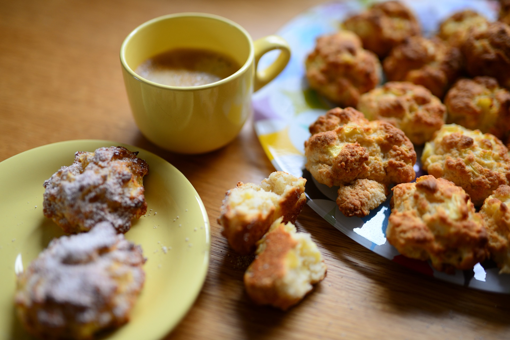
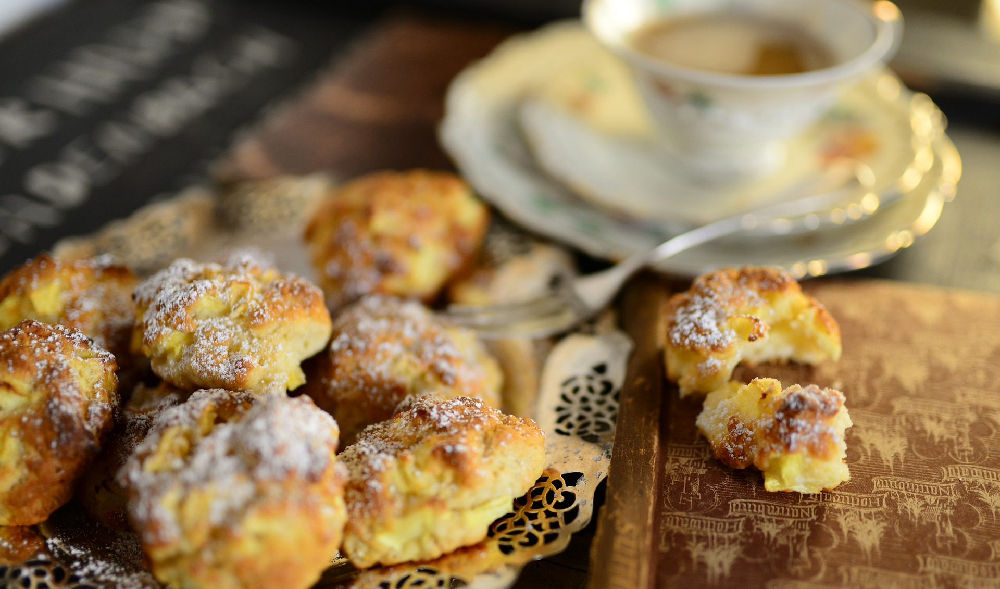

New Zealand Baking
Best Ever Scones
A HTML site by Gracie

Ingredients
- 3 Cups Standard Flour
- 6 tsp Baking Powder
- 1/4 tsp salt
- 75g butter
- 1-1.5 cups of full fat cows milk
Method
- Preheat the oven to 220ºC. Grease or flour a baking tray.
- Sift the flour, baking powder and salt into a bowl. Rub in the butter with your fingertips until the mixture resembles fine breadcrumbs.
- Add the milk and quickly mix with a round-bladed table knife to a soft dough. For light and tender scones the mixture should be quite soft and a little sticky. Scrape the dough onto the floured baking tray and flour the top.
- Working quickly, pat the dough out to 2cm thickness and with a floured knife cut it into 12 even-sized pieces, then separate the scones to allow 2cm space between them. Brush the tops with milk.
- Bake for 10 minutes or until golden brown. Place on a wire rack to cool, wrapped in a clean tea towel to keep them soft.
